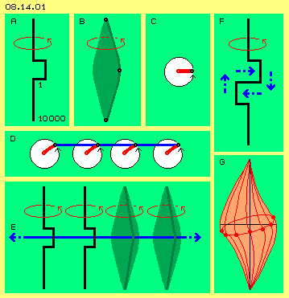
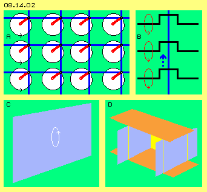
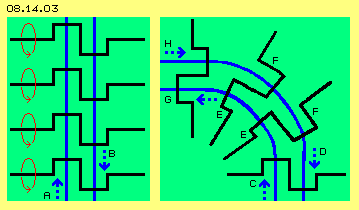
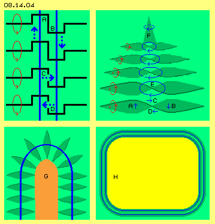
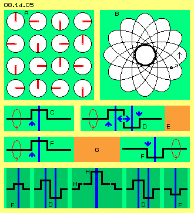
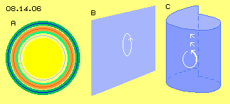

Preliminary
At this chapter and especially at following chapter partially is spoken about ´strange´ appearances, like ufo, crop circle, megalith techniques and also about consciousness, soul or astral journey. By sure, I don´t want to convince somebody of existence of ´para-normal´. Multiple literature is available, so everybody can search for information. Like everywhere there are lies and deceptions or profiteers. Nevertheless one can find true essence of these appearances.
That´s not possible by mainstream-sciences because often physical ´phenomena´ are excluded and in general such dubious appearances of ´para-physics´ are denied. However it might be clear: weighing, measuring and counting won´t be sufficient for understanding reality.
I try to work most realistic and to avoid pure abstract terms. My considerations are based exclusively on aether of properties I defined precisely. At both previous chapters I deduced motion pattern for explaining ´phenomena´ of atom structures. Now the following search for additional motion pattern (possible only within this aether) offers explanations for some physical processes. Above this, these new ´aetheric structures´ allow explanations also for appearances, which up to now are classified ´paranormal´ or ´paraphysical´.
At this chapter at first are discussed only pure ´technical´ questions, so the research for theoretic possible motion pattern. These aspects concern only the ´fluid-technology´ of aether, strictly deduced from properties of aether and thus representing motion-necessities of gapless aether.
Crank, Cone and Swinging
If one assumes aether would exist by particles (like practically all researches do up to now), all unsolved problems of particle-world are transferred only one level below. Finally when aether is assumed to exists as a gapless whole, quite new aspects come up for probably world-view more realistic. However within that gapless substance with throughout homogenous density, no longer any kind of motions are possible (and some readers probably still can not even imagine, motions should be possible at all).
My first consideration for motion possibilities are shown at picture 08.14.01. Generally the Free Aether everywhere is swinging multiple kind, however only at relative narrow tracks (so here sometimes is called ´resting´). At a local area, aether could swing at wider tracks similar to principle of a crank-shaft, like schematic sketched at A. Shaft by itself is turning at narrow space (here left-turning assumed all times), the crank-part however at larger radius.

It´s clear: we can not realize true reality, but only via impressions of our sense organs (and interpretation by brain). Really existing for example are only electromagnetic waves, however no colours like red, blue or green. So we realize reality only by ´illusions´. The most great illusion might be, within that ´steel-hard´ aether indeed nearby no motions exist. If here e.g. the crank is one millimetre long, I expect the shaft should be ten metres long at both sides (deduced by relation of about 1:10000 of radius of atomic nucleus and atom in total). So probably the latitude for motions is rather narrow respective here all curvatures are extremely overdrawn.
Instead of that crank, often here are drawn ´balancing-cones´, like sketched at this picture at B. Upside and below aetherpoints (black points) are stationary resp. ´resting´ (Free Aether), the aetherpoint at the middle is swinging at a circle track. All aetherpoints between, so positioned at this connecting line (dark green) are swinging analogue at each smaller radius. This connecting line thus describes shape of a double-cone (marked light-green). At cross-sectional views, this swinging often was marked by ´clocks´ (like here at C), where observed aetherpoint (black) is positioned at the end of clock-hand (red).
When one aetherpoint is moving, all neighbours must behave analogue (because there are no gaps within aether and not even different densities). At D are drawn four clocks and at each end of clock-hands is marked an aetherpoint (black). All neighbouring aetherpoints between are positioned at blue connecting line. When clocks are turning, all aetherpoints are swinging synchronous, each around its own fulcrum (and this motion pattern here is called ´swinging´ opposite to term of ´rotation´- what can not occur within aether by itself).
At this picture at E are sketched two cranks by longitudinal cross-sectional view and corresponding two double-balancing-cones. Also here is drawn a blue connecting line and each central aetherpoint (black) is marked. Also here all these aetherpoints are swinging within space, from left to right and back again within plane of picture, up and down in vertical direction, so at circled track. By both blue arrows is pointed out, also all neighbours further left and right must swing likely.
Double-Crank and Potentialvortexcloud
First considerations for possibilities of motions within that rigid aether thus were deduced by turning of a crank. This swinging-motion has borders upside and below (at this picture at E, at each end of balancing cone), however not towards left and right side (and vertical to plane of picture). This swinging theoretically would reach from one end of universe cross towards the other side - thus would not be a local bordered motion pattern. That´s why I dismissed that idea (because one should have noticed existence of such a ´wall´ through universe).
A local concentrated motion pattern is only achieved with a ´double-crank´ (analogue to crank-shaft of two-cylinder-engine), like sketched at picture upside right at F. Blue arrows show whereto aetherpoints at this moment are shifted in horizontal level: upside towards right and below towards left. So momentary upside-right are ´too many aetherpoints´, while downside-right are too less. There exists possibility for local balance by additional motion of aether, when aetherpoints move right-downward (and according a motion left-upward exists, see vertical arrows). So there comes up a motion-circuit at narrow space - thus without affecting universe up to its ends.
At picture below right side at G is drawn the central area of that ´potentialvortexcloud´, which is described at part ´03. Local Aether-Movements´ in details. There e.g. chapter ´Swinging Disk´ portrays up- and downward balancing motions near equator (blue vertical arrows). Chapter ´Circulating Waves´ shows these motions won´t run linear up and down but again are swinging at circled tracks (and thus come up wave-like motions running all around). Chapter ´Tumbling Axis´ describes the ´twisting of crank´ at main axis of motion complex. Chapter ´Potentialvortexcloud´ remembers this motion pattern works like a potential vortex because it´s showing most strong motion-intensity at centre. Towards outside, all motions are reduced at smaller radius, so from outside this appearance looks like sphere-shaped ´motion-cloud´.
Electron, Photon, Atom
This local motion pattern is very important and exists really frequent. It can be stationary and e.g. represent a ´resting´ electron. This vortex-complex can hang free within space or can stick at atoms or can stay between atoms resp. molecules of solid bodies. Motion-structure of electron can also wander through space by different speeds. This motion-pattern is ´round stuff´, nevertheless when moving through space the aether involved must temporary change its original motion into motion shape of this vortex-pattern passing by. So an electron is somehow ´bulky´ and thus shows corresponding ´mass´.
Similar motion pattern results by ´stress´ of fast and hard collision of two atoms. For relaxation of tense situation, a ´screw-shaped´ motion exits (like a drill, sharpened at front- and backside, see logo of my books). This balancing motion cross to line of collision races off by light-speed, only one turn long (because afterward ´tensioned´ connecting lines already are relaxed). This appearance is called ´electromagnetic wave´ (details see chapter ´03.11. Moving Potentialvortexcloud´ and some other chapters).
Also at following chapter ´Sun´ that subject once more is discussed comprehensive, so here are mentioned only some aspects in brief. That ´photon´ is born by an ´emergency-case´ because connecting lines between both collision-partners were stressed nearby to limit of bending-possibility. That oversize tension must be spread into wide environment. Thus every photon is generated inclusive forward-impulse - and thus never can rest. One ´turn´ is sufficient for relaxation, i.e. the photon is very simple motion pattern. Nevertheless wandering of that structure through space affords temporary changes within aether of flight track. So also photons show some ´bulkyness respective mass´. Depending on kind of atoms and intensity of collision, these ´one-turn-swings´ are pushed off by different frequencies and different strength - thus resulting previous ´colours´ resp. more or less hard radiation.
Totally different are structures of these ´thick´ atoms of previous chapter, which ´stand´ within space or are moving around relative slow. In principle, some of previous cranks are radial arranged for building an atom. The wide part of cranks thus are positioned at sphere-shaped face. There are spread these ´eyes´ with their maximum motion intensity. Towards outside this wide swinging is reduced at area of aura. Centre of atom appears ´hard´ because there all inner ends of crank-shafts must swing adequate at narrow space.
Swinging Faces
Above these motion pattern already introduced, at the following some further possibilities for aether-movements are examined and some general theoretic versions are shown. Starting point of these considerations is that flat swinging, like once more is sketched at picture 08.14.02 left upside at A.

There are drawn some clocks (white), which all are left-turning by likely speed. All clock-hands (red) show into likely direction and at each end of hand is positioned an aetherpoint (black). Every aetherpoint has many neighbours, for example at connecting lines (blue) drawn here horizontal and vertical. All these points are swinging synchronous at level of picture.
At B is drawn a cross-sectional view through that level and these cranks represent swinging of previous clocks. Momentary all aetherpoints (at blue connecting line) are shifted some upside of their fulcrums (see blue arrow). Instead of these ´stiff cranks´ that swinging could also be represented by previous balancing-cones. At any case results a swinging face and towards both sides the radius of swinging are reduced. So this ´wall´ has an ´aura´ of balancing motions at both sides towards Free Aether.
This wall reaches through total universe (and that´s why at first I did refuse this motion-possibility). At this picture at C is sketched only a part of an ´infinite´ blue face. Naturally, many of these walls could exist at universe. At D for example are drawn two blue walls (again only by parts). Cross to these walls could lay further faces, e.g. like these two red faces drawn here. Where these surfaces mutually are crossing, motions will simply overlay - what´s usual and without problems within that gapless aether.
These four faces now practically build a ´tunnel´. Here is indicated, that tunnel could be closed at its backside by an additional wall (yellow). If also at frontside an other wall would exist, a ´closed´ room´ comes up. These walls protect the room against Free Aether (and also against external disturbances). So there could come up an inner space with an ´independent world´.
Curved Faces
At earlier chapters was stated, any movement of an aetherpoint affects neighbours ´infinite´ far, straight on. Movements in certain direction can only end when redirected right angles to original direction. Previous room was closed by faces, however these ´walls´ did go on swinging also behind their crossing lines. At picture 08.14.03 now schematic is shown a bending of such walls, so they will no longer affect straight on.

Left side are drawn four ´double-cranks´, so their turning produces two swinging walls (blue). Momentary the aetherpoints of wall A are positioned some upside and these of wall B some below of their fulcrums. All neighbours further up and down must also be positioned analogue.
Right side of this picture now shows, the radius of double-crank well can have different lengths. Here e.g. left crank E is much shorter than right crank F. At situation drawn here, left wall (at C) is lifted few, while right wall at D is guided down longer distance. At a whole results bending of both walls, so upside at G and H the swinging motions occur at horizontal level.
Instead of these stiff cranks, real process is done by curved connecting lines. At both sides of each wall, these connecting lines move at cone-surfaces. Left side that cone will be short, because narrow swinging demands few balancing motions. Right side of wall, the cone will be longer resp. the aura is wider in order to reduce that wide swinging to fine swinging of Free Aether.
This sketch shows right-angle-bend of wall, naturally these asymmetric ´cranks´ resp. balancing cones allow also small bends. So walls must not be completely plane but can show wave-like contours (like a curtain) or any kind of dents and bumps.
In order to avoid misinterpretation: the ´outer-wall´ is not stretched by this bending and the ´inner-wall´ is not shrinked (like would be necessary at a material ´sandwich´ wall). These walls are only motion pattern within generally stationary aether. Along convex side, aether there is only swinging at some larger radius than the aether along the concave side (so comparable with motions at sphere-shaped surface of atoms of previous chapter). As these walls here must not build perfect spheres, different motion pattern of asymmetric swinging can build walls with most various curvatures.
Limited or endless Walls
At picture 08.14.04 upside left are drawn four double-cranks once more. The walls A and B move up and down (respective are swinging at circle tracks). Like already mentioned at previous picture 08.14.01 at F (and potentialvortexcloud G deduced by that motion principle), that ´too much and too less´ of aetherpoints can be balanced by additional motion cross to that swinging plane. Here that balance between both walls is marked by arrows C and D.

Upside right at this picture 08.14.04, instead of these cranks are drawn the alternative figures of double balancing cones. Also there the upward and downward motions (A and B) inclusive these sideward motions (C and D) are marked by blue arrows. These motion components as a whole result circling swinging, like marked at E by blue ring-arrow. These motions tilt up and down and same time are circling around, comparable with a ´wobble-disk´ (described in details as equatorial motion of potentialvortexclouds at mentioned chapters).
Both walls of a double-crank will not reach out endless into space. When momentary the aetherpoints of one wall are shifted upward (and all neighbours upside of analogue), at least by parts they can escape into second wall, within which momentary the aetherpoints are shifted down. The intensity of swinging thus will decrease by increasing height. Cross-sectional view through that double-wall (inclusive aura of balancing motions aside) shows that ´Christmas-tree´ motion pattern (with contours similar to a fir-tree), whose tip F finally represents balancing cone of the central wobble-swing.
Separated and parallel Walls
Height of previous ´fir-tree´ cross-section depends on intensity of a motion ´source´ (which here should be positioned below). The double-wall of a double-crank however could show stabile resp. certain height, if that balancing by sideward motions is hindered. At picture 08.14.04 below left these both cranks are separated by a ´barrier´ G (light red).
When left wall momentary is shifting its aetherpoints upward, neighbours can change to right side only upside of barrier, where the right wall momentary is guiding downward the aetherpoints. Naturally all aetherpoints are swinging synchronous at circle tracks. That barrier by itself naturally is build by certain swinging-pattern. Intensity of motions within that barrier determines height of that ´archway´. The shape and extension of that motion pattern is controlled by central barrier-motions.
At this picture 08.14.04 below right is sketched, also a double-wall (marked blue) can reach ´infinitely´ far resp. can swing endless: when build in shape of closed loops. At previous picture 08.14.02 a ´tunnel or room´ was build by crossing of plane walls - now this version with bended walls results inner-space H (yellow) really closed all around - which indeed can build an own world, protected against the outside world.
Tracks-with-Stroke, Rosette-Tracks
At all of these motion pattern, all aetherpoints must behave adequate. This must not be a complete synchronous swinging all times, like discussed at previous chapters. At picture 08.14.05 upside right at A for example are shown diverse clocks and their hands show different hours (here rather coarse shifted by each 90 degree), into horizontal and also into vertical directions. At researches for ´perfect´ pattern at sphere-surfaces this arrangement came up along equator. Distances between aetherpoints (at each end of clock-hand) show different lengths and are varying all times. However there are several solutions for this (seeming) problem.
The connecting lines could show constant length if in addition they are bended into third dimension, or if distances between clocks are variable, or if clocks are turning by varying speeds. In general there will come up overlays (of circled motions) and resulting are ´tracks-with-stroke´. Motions prevailingly will swing around a focus and thus will build rosette-tracks, like here once more is sketched upside right at B. These pattern came up inevitably at sphere-shaped surfaces (e.g. these eyes of atoms). These most flexible motion pattern (forward and backward turning, depending on relation of radius and turning speeds) naturally can work also at surfaces more or less plane respective will occur often.

Simple Crank - endless Wall
Local limited motion pattern always show relative wide motion at centre and aside of towards Free Aether motions with reduced radius. This transit from coarse to fine swinging here is called ´aura´ and is represented by balancing-cones at pictures here. At flat-spread pattern, this reduction occurs at both sides of middle ´wall´. Once more simplistic this general motion process here is marked by cranks. At low part of picture are sketched principle possibilities of such flat motion pattern.
At C most simple version of crank is drawn. Left and right side of crank-shaft (black) is ´resting´ Aether, which toward middle is swinging at increasing radius, so at centre exists most strong motion intensity. As all neighbouring aether behaves likely, this wall (blue) reaches cross through universe (and that´s why I first did not see any chance for existence of that motion pattern).
Double-Crank - single or flat Faces
The double-crank is mentioned already at picture 08.14.01 at F, which same time is motion principle of potentialvortexcloud (and there at G is sketched the core of that appearance). This motion pattern is embedded all around by Free Aether and exists real e.g. in shape of free electrons. Here at picture 08.14.05 the double-crank is shown at D and here are assumed analogue motions upside and downside of. So many of these parallel arranged double-cranks build two ´wall-faces´, which opposite to each other are swinging up and down (at circled or any round tracks).
Opposite to simple crank, this motion pattern however will have no unlimited extension, because cross to the walls (see arrows) already (partial) balancing occurs. The higher that double-wall, the weaker the motion intensity is, what´s sketched at previous picture 08.14.04 upside right as ´Fir-tree-pattern´. So the height of these double-walls depends on a motion-source (and naturally the intensity of swinging depends on length of crank-radius respective on stroke-length of that double-crank source).
Electric Charge and Current
All materia is embedded within a swinging aether-layer, thus is enclosed by a ´natural´ aura. A part of that aura here is marked by light-red face E (and its material is assumed right side of). At outside border (left) of this aura can be established an additional ´artificial´ layer of swinging motions - and that ´electric charge´ one well can imagine as double-crank motion-pattern D. As ´source´ for creation of that layer might serve rubbing different materials and thus producing ´electrostatic charge´. A charge at conductor-surfaces is also achieved when applying voltage or normally by any electric-generator.
Surrounding Free Aether pushes and presses these swinging-layers to likely height onto aura of material. That´s why DC ´flows´ without additional efforts from source to user (as ´thick end´ of charge layer is flattened). At AC however the charge-layer is shaken to and fro. This process demands efforts because aether is forced to change its motions much more.
General aether-pressure sometimes might hit separated vortices out of charge-layer, e.g. at sharp edges of material - and this ´charge-drop´ becomes a free electron. It´s movement pattern is nearby identic, now however that double-crank is a separated vortex-complex in shape of potentialvortexcloud. Around a round conductor that charge-layer is closed loop all around, i.e. that swinging can run ´infinite´. Within that double-crank motion-pattern however exists that internal balancing (like upside marked by that cross arrows), so given ´voltage´ shows long-term fading (e.g. called ´leakage current).
This real example for flat motion-pattern here is mentioned, because it´s clear evidence for existence of aether and its behaviour. At DC the charge-transport is done automatic by general aether-pressure (and high voltage-transport e.g. at distance of 1000 km shows losses of some 5 %). AC however is no aether-conform motion, but demands energy-input for steady deformation of charge-movements (and this ´aether-stress´ results losses of 50 % by likely voltage and distance). Details of electromagnetic processes can only be described some later by separate part of these Aether-Physics.
Multi-Layer Motion-Pattern
The ´archway-motion-pattern´ (of previous picture 08.14.04 below right side) is shown at picture 08.14.05 once more. There, that double-crank is divided into two simple cranks F (with opposite position of crank-direction) and both are separated by ´barrier-layer´ G (light red). As mentioned upside, the extension and shape of these walls is controlled by intensity of barrier-motions.
Below at this picture is sketched an example for relative complex motion structure. At left and right side are two single-cranks F and inside of, two double-cranks D. Radius of cranks must not by symmetric, so total structure could also be curved (e.g. like at previous picture 08.14.03 right side) or could also show any wave-shaped contours. At the centre in addition is marked a crank H including another crank H, resulting an overlay of two circle-tracks. This central wall thus is swinging by tracks-with-stroke or at rosette-tracks, even forward or backward wandering around a focus. This example shows complex motion structure of seven ´walls´ (blue), which can build faces more or less plane or that ´sandwich´ can be curved as a whole.
Protected Rooms and Membranes
Such multi-layer-walls differ the Free Aether, so at both sides of wall can exist different conditions. At the other hand these walls exist by nothing else than just normal aether, and thus these walls well could be penetrated by other motion pattern. However, depending on shape and complexity, the walls work like filters. Those walls thus can function as ´membranes´, pervious only for certain aether-movements, also only into distinct direction.

These ´partition-walls´ will not only build plane faces but by majority will build round units. At picture 08.14.06 right side at A is sketched a sphere-shell, where different colours represent multi-layer wall. Resulting is a closed inner space respective an independent inner world, completely cut off environment or allowing entrance only certain motion pattern (equivalent to ´energy´ or ´information´).
Naturally these membranes must not be shaped like perfect spheres but can take nearby any round shape. Swinging of walls is running ´endless´ all around within these closed shells, thus no steady energy-serving ´source´ is necessary (like at some motion pattern listed upside). These membranes well can allow suitable ´energy-input´ from ambient aether-motions. The protection-function of these aetheric formations thus is possible without consumption of ´own´ energy.
Tunnel with special Properties
At this picture 08.14.06 in the middle at B, once more a plane wall with single-crank is sketched. However this is only a part of, because that wall would have infinite extension. At C this wall is rolled up in shape of a pipe - and thus swinging motions can run endless. This structure now is local limited respective this ´tunnel´ is still open only at its ends.
The tunnel-wall can be build by simple swinging or could show complex and multi-layer structures. At any case will come up motions at tracks-with-stroke. An important and frequent appearance will be, that stroke occurs diagonal and running all around, like here marked by white arrows. The part of slow backward-motion can prevailingly occur outside of pipe and fast forward-stroke by majority can occur inside of pipe. Aether-movements inside of pipe thus no longer are like neutral Free Aether, but a preferred direction of motions exists - for example functioning like a ´conveyor belt´.
No String-Theory and no Wormhole
In order to avoid misinterpretations: these pipes have nothing common with the ´strings´ of known theories (where anything anyhow is curled up into anyway dimensions). Based on my insights, only one aether really exists, all universe wide. Only for definition of locations and for measuring speed these pure abstract terms of ´space´ and ´time´ artificially are introduced. These are fictive utilities for communication between people (while aether and its movements exist really without these terms).
More than three dimensions are not necessary, there are really no additional or even ´higher´ dimensions (nor universes). Real however is, within same aether can exist swinging motions of most different ´grain´ (commonly called ´frequencies´, however these commonly are used only for waves). These multiple swinging motions occur at same location, simply by overlays. There are no ´wormholes´ necessary for travelling to any other of potentially infinitive many ´parallel-universes´. However, using suitable ´antenna´ one well can feel some outside of narrow material world. Every human being for example lives same time within that narrow ´material world´ and its ´spiritual world´ - even some seem completely fixed on material particles.
Only by gapless Aether
At first parts of that Aether-Physics I only described the motion pattern of that potentialvortexcloud as a local appearance. Finally with this part ´08. Something Moving´ I was able to show additional motion pattern, e.g. by discussing Milkyway, sun system and especially these ´Rosette-Tracks at Sphere-Shells´. Rather difficult was definition of motion pattern at sphere-shaped objects (like at previous chapter of atom-model), because there all motions meet at centre and must run synchronous.
Much simpler are motions at plane faces where at both sides of wall is room for balancing motions toward Free Aether. Naturally all previous mentioned motion pattern are possible there, faces can be curved, can build pipes and round formations of great variety. However these motions are only compelling, if each motion of one aetherpoint inevitably demands adequate behaviour of its neighbours. Only by that exclusive condition previous ´walls´ can come up and can stay, thus only within that gapless medium. Practically all other researchers still assume an aether existing by particles (or design hypotheses without exact definition of underlying medium). If however no gapless aether-contiuum is assumed, each aether-particle can behave as it likes, so that necessity of certain aether movements would not exist (or one has to introduce many mysterious forces and properties - like usual at common nature sciences).
At following chapter are discussed real examples for previous ´aetheric formations´. Some are known physical appearances, some examples concern appearances commonly called ´para-normal´ or even unreal. At any case new explanations for these ´phenomena´ are offered - and everybody may take that stuff for inspiration or call it pure nonsense.